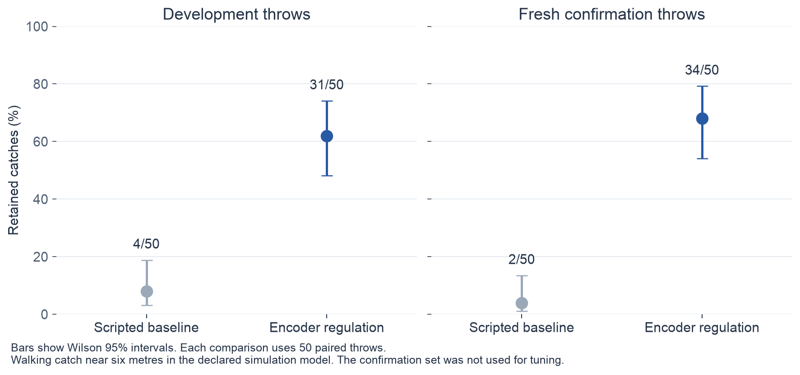
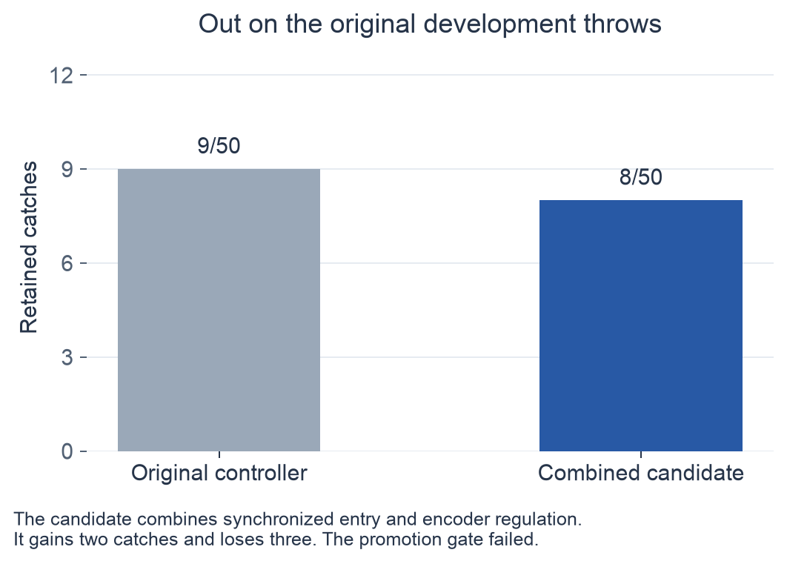

Introduction
Catching a pass is not catching a ball thrown at you. The receiver runs a route, works out where the ball will arrive, and has to hold on while its own body is still moving. We study that in simulation with a Unitree G1, compact Aero hands, three routes and a fixed passing machine.
One change helped a lot, and it was not learning. Making the fingers respond to their own encoders raised retained Go catches from 2 of 50 fresh throws to 34. One change did not help at all: a learned arm controller lost to a hand-written baseline on the Slant route. Both results are below, in that order of confidence.
Everything here is simulation. No physical robot has caught a football, and every catch shown is a walking catch.
The words we use
- Retained catch
- The ball still has real hand support at the final frame, with no help from the torso, the floor or the hand mounts. Everything else is a miss, however convincing the contact looked.
- Two-hand control
- Both hands on the ball, with the ball held away from the torso. We also record how long it lasts, in milliseconds.
- Torso-first
- The chest reaches the ball before the hands do. On the Out route this is the most common failure and it is not a near miss: the hands never get a turn.
- Finger regulation
- Each finger tendon's commanded target follows the finger's measured position instead of a fixed number, so closing slows down when the hand meets the ball.
- Scripted baseline
- A hand-written controller. Fixed timing, fixed finger targets, no learning. Every learned result here is measured against this.
- Learned arms (PPO)
- A policy trained by reinforcement learning to make small pre-arrival arm corrections. PPO is the training algorithm; the learned part is only the arm offset.
- Confirmation set
- Throws generated and frozen before the changed controller was ever run. The old page's development numbers are the ones we tuned against; the fresh confirmation numbers are the ones we trust.
- Sim2real
- The gap between behaviour in simulation and on the physical robot. Contact stiffness, actuator transmission and camera noise are the reasons we do not claim a transfer.
The setup
The receiver is a Unitree G1 with compact Aero hands, thrown to by a fixed machine. Locomotion comes from pretrained G1 controllers that we hold fixed; our work is the interception and the grip.
Perception uses rendered colour and depth images from surveyed external cameras plus a marker rig. IMU and joint encoders give posture and body configuration. Exact simulator state is used only to score, and never enters a controller.
Sources: sensor contract · route survey
What we started with
The first receiver was a scripted pipeline. It localises itself on the field, follows the route, turns to the ball, and at a visual grasp cue it runs a fixed finger-close and a fixed arm cradle. It has no idea whether the hand actually met the ball: the fingers keep closing to the same target whether they are around the ball, beside it, or already squeezing it.
That worked often enough to be interesting on the Go route (4 of 50 development throws) and almost never on fresh throws (2 of 50). Before changing the robot's body, we tried three different fixes, and one of them was learning:
- Change when the hands arrive. Time the arms so the hands meet the ball instead of waiting for it. This became the synchronized-entry candidate.
- Change how the fingers close. Keep the fixed timing but let the fingers feel their own position. This became encoder-feedback regulation.
- Change the arms with learning. Train a small corrective policy on top of the scripted motion, bounded so it cannot fight the body controller.
What we compared
Each row is a method, not a route. Every comparison uses the same throws on both sides, and "of 50" means fifty throws from a set none of the controllers were tuned on.
| Method | What it does | Result | Verdict |
|---|---|---|---|
| Fixed finger close | Fingers close to one target at the grasp cue and stop listening. | Go: 4 of 50 development, 2 of 50 fresh | Starting point |
| Encoder-feedback fingers | Finger targets stay 1.5 mm behind measured finger position. | Go: 31 of 50 development, 34 of 50 fresh | Clear gain |
| Synchronized entry + regulation | Hands are timed to arrive with the ball, plus encoder fingers. | Out: 8 of 50, original 9 of 50 | Rejected |
| Learned arms, 7 fixed cases | PPO nudges the arms before predicted arrival. | Slant: 4 of 7, scripted 1 of 7 | Looked promising |
| Learned arms, 50 fresh throws | The same policy, frozen, on throws it never trained on. | Slant: 12 of 50, scripted 19 of 50 | Lost |
Our best method
The winner is the smallest change in the project. After the visual grasp cue, and for a 0.6 s window, each of the eight finger flexors limits requested closure so its commanded target stays at least 1.5 mm behind where the finger actually is, restoring over 0.2 s afterwards. The six thumb requests are untouched, and so is everything the route controller does.
In practice that means the fingers are allowed to slow down as they meet something. A hand that arrives early no longer keeps driving into the ball once the ball is already seated.
Source: finger-regulation.py.txt (verbatim excerpt, constants included)
Its success rate
On the frozen Go confirmation set, retained catches went from 2 of 50 to 34 of 50. The Wilson 95% interval is 54.2–79.2% for the changed controller against 1.1–13.5% for the original. Paired over the same throws, that is 32 gained and none lost, a 64-point improvement with a bootstrap interval of 50–78 points.

It is still a narrow result: one frozen controller, one route, throws from a distribution we declared in advance. Nothing here speaks to other distances, other seeds, or a real hand.
Sources: go-confirmation.json · go-development.json · manifest
Why it performs this way
A fixed finger target is an open-loop squeeze. The command keeps asking for more closure after the fingers have already met the ball, so the ball is loaded harder and harder until it finds the one direction with the least support and leaves. That is why the original controller can look excellent in a selected clip and collapse over fifty throws: the outcome depends on where in the squeeze the ball happens to sit.
Encoder feedback replaces the target with a trailing margin. The fingers can still close fast in free space, because nothing is resisting them, but the commanded target moves with the finger, so contact stops being a competition between two positions. The ball is held by shape rather than force. It also explains the stability of the gain: development 31 of 50 and fresh 34 of 50 are the same behaviour, not a lucky fit.
The Slant result is the mirror image. The learned arms held the ball longer during contact — clean two-hand control rose from 171 ms to 873 ms on fixed conditions — and still ended with fewer catches. Longer contact is not a catch. The policy was paid for alignment and duration, and it delivered alignment and duration.
How the reward was written
Both policies are trained without privileged state. The reward sees camera ball estimates, IMU, joint and actuator encoders, and the commands it issued. It never sees simulator contacts, the exact ball state, or the evaluator's catch score.
The learned arm policy pays for alignment with a camera-predicted intercept, and only for fresh captures before a deadline that can move earlier but never later:
Scales s = (0.12, 0.08, 0.10) m. u is the IMU upright cosine, a the normalized arm request, δ the delivered arm residual. Larger position uncertainty attenuates alignment credit rather than sharpening it: the reward is a Gaussian expectation, not a confidence gate.
The route and receiving environment adds a second, denser reward at 25 Hz, built from measured route progress, cross-track error, an encoder-based reach error, and observed dwell inside the receiving volume:
The terminal bonus is the only term that rewards an actual retained catch, and it is paid once per episode. Progress increments are clipped so a localization jump cannot earn metres of route in one step, and the reach term uses forward kinematics from encoder angles, not the simulator's ball position.
Sources: precontact objective · receiving reward · learning protocol
The loss we kept
Slant is the route where learning looked right. On seven fixed conditions, the PPO arm policy raised clean two-hand control from 171 ms to 873 ms by moving the arms before the predicted arrival, and retained 4 of 7 against 1 of 7.
Frozen and run on 50 fresh throws against the scripted baseline with the same finger limit, it retained 12 of 50 against 19. Six throws were gained, thirteen were lost. The paired difference is −14 points, with a bootstrap interval of −30 to +2.

Out is the other negative, and it fails earlier in the play. In an audit of 150 archived plays, 32 of 50 original Out throws hit the torso before the hands, and 38 never reached 0.75 s of clean two-hand control. A candidate that combined synchronized entry with finger regulation retained 8 of 50 against 9 for the original, so we kept the original.

Sources: Slant confirmation figure · factorial · Out development · entry audit

Missed catches and falls
A dropped pass is not only a missed catch. It becomes a safety problem when the ball rolls into the feet of a walking robot, and on hardware a fall is the expensive event: damaged joints, a reset that costs minutes, and a risk to anyone standing nearby. That is why we spent effort on the failure case and not only on the catch rate.
In one natural failed Go catch, a camera spots the loose ball inside the predicted foot corridor and cancels the walking command for 250 ms. The warning arrives at 6.88 s; the ball reaches the ankle at 7.75 s.
| Measure | Missed catch | With visual avoidance |
|---|---|---|
| Peak head contact force | 405.59 N | 0 N |
| Peak floor force outside the feet | 3,935.71 N | 0 N |
| Largest 150 ms floor impulse | 91.37 N·s | 0 N·s |
This is scripted avoidance with a camera added, not a learned recovery and not a return to standing. The reason it belongs here is sim2real: the video is evidence about a failure mode, not evidence that the catch transfers to hardware.
Sources: avoidance audit · avoidance clip
What is left to fix
- Hardware, entirely. No physical G1 has run any of this. Contact materials, actuator transmissions and camera noise are uncalibrated, so the 1.5 mm margin is a simulation number until someone measures it on a real finger.
- Out geometry. Torso-first contact in 32 of 50 throws is a reach and approach problem, not a grip problem. Finger regulation cannot help a hand that never gets to the ball.
- Slant across the body. The learned arms bought contact time and lost catches. The next attempt needs a retention signal the policy can actually observe late in the play, not just alignment.
- Running catches. Every displayed receive qualifies as walking. Catching inside a recurrent running gait is open.
- Seed variance. Each result is one frozen checkpoint. None of these intervals describe seed-to-seed spread, so a rerun with a different seed is the honest next test.
- Deployment needs surveyed cameras, a marker rig, a timestamped link to the passing machine and an Aero hand driver. No ARM64 controller image exists.
Reproduce it
The simulator and tests are in the repository. This command renders a short flight episode and writes the sensor and truth arrays; it needs only numpy and mujoco.
sh run.shIt prints Rendered 60 MuJoCo RGB-D frames at 30 Hz and writes flight-sensor.npz, flight-truth.npz and flight-overview.npz. It does not re-render the videos here: those come from frozen study runs, whose simulator trees are too large to ship.
References
Every file below is served from this site, and each section names the ones it relies on.
- overnight/manifest.json — scope of the verified evidence, SHA-256 for every published figure and video.
- overnight/experiments.json — run receipts, checkpoints, counts, and the no-promotion decisions.
- overnight/go-confirmation.json — the 50 fresh Go throws, 2 against 34.
- overnight/go-development.json — the 50 development Go throws, 4 against 31.
- overnight/slant-fresh-confirmation.png — 50 fresh Slant throws, 19 scripted against 12 learned.
- overnight/slant-factorial.json — the seven fixed conditions and the 171 ms to 873 ms contact change.
- overnight/out-development.json — Out original 9 of 50 against candidate 8 of 50.
- overnight/entry-retention.json — the 150-play audit behind 32 torso-first and 38 short holds.
- overnight/finger-regulation.py.txt — the 1.5 mm closure rule, 0.6 s window, 0.2 s restore.
- overnight/precontact-objective.py.txt — the arm policy objective and its 25× alignment weight.
- overnight/receiving-reward.py.txt — the 25 Hz route and receiving reward, term for term.
- overnight/learning-protocol.md — what the actor, critic and reward are allowed to see.
- overnight/sensor-contract.md — the strict sensor boundary.
- overnight/avoidance-independent.json — the matched fall pair, forces and timing.
- overnight/route-survey.json — surveyed route geometry and receiving planes.
- plays/go.json, plays/slant.json, plays/out.json — provenance for the three switch clips, including their controlled release parameters.
The earlier 600-trial study, including the methods we abandoned, is preserved unedited in the previous write-up.